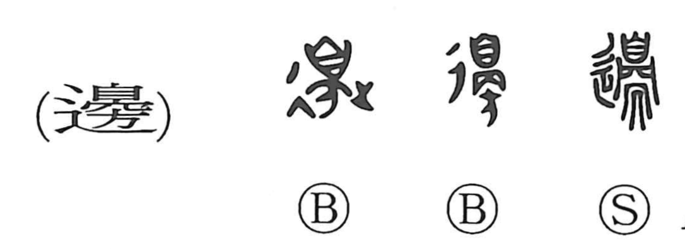

Explanation
The original form is 邊, a phono-semantic graph with 晏 as its phonetic. Within 晏, 自 depicts a nose seen from the front, and beneath it is a stand; in contrast to 方—understood as a corpse hung from a horizontal beam—晏 shows a body laid on a pedestal, nose upward, the legs hanging below. The 辵 element conveys walking or moving along a path. In early belief, the boundary where one’s land touched that of other tribes was thought to be haunted by their spirits, so the dead were set at these margins as an apotropaic barrier to ward off harm.邊 thus records a border-guarding curse rite, from which arise meanings such as frontier, boundary, edge, and by extension the neighborhood or vicinity—reflected in Japanese readings like atari and be, as in sokora atari, umibe, and kishibe. In compounds like 辺塞, the character 塞 originally shows ritual implements piled under a roof and raised with both hands to venerate the earth gods, thereby “blocking” the passage of malevolent spirits—hence its sense as a verb ‘to block’ and as a noun ‘fort.’